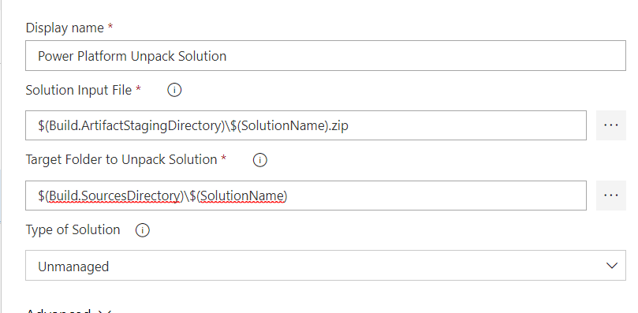

[!NOTE] Effective November 2020:
- Common Data Service has been renamed to Microsoft Dataverse. Learn more
- Some terminology in Microsoft Dataverse has been updated. For example, Table is now table and field is now column. Learn more
This content will be updated soon to reflect the latest terminology.
Lab 10 – Application Lifecycle Management
Scenario
A regional building department issues and tracks permits for new buildings and updates the remodeling of existing buildings. Throughout this course you will build applications and automation to enable the regional building department to manage the permitting process. This will be an end-to-end solution which will help you understand the overall process flow.
In this lab you will use Azure DevOps for source control of your solution assets. As you have been building your app you have been tracking all the changes in a Permit Management solution. You have exported this solution, so you had a back up copy. You have also manually imported the managed version of the solution into your production environment. As part of this lab you will see how you can automate working with solutions and use the Power Apps Azure DevOps tasks to check the changes into an Azure DevOps Repository. This is the start of an overall ALM process that you would put in place to automate the complete lifecycle form development to production using Azure DevOps automation. In this lab you will be completing the first phase of that automation.
High-level lab steps
As part of configuring Azure DevOps ALM automation, you will complete the following
-
Sign in to your Azure DevOps account
-
Create an Azure DevOps project
-
Configure the Power Apps ALM tasks
-
Build an export solution pipeline
-
Test the export from dev to Azure DevOps
Things to consider before you begin
-
How often are you planning to run the build process?
-
Is it going to be fully automated or run manually?
-
How many users will be committing changes into the repositories and how often?
-
How many instances are you planning to control?
-
Are there any other build tasks you should consider?
Exercise #1: Initialize Azure DevOps
Objective: In this exercise, you will use your Azure DevOps account to track the solution assets of the Permit Management app.
Task #1: Sign in for Azure DevOps
-
Sign in for Azure DevOps
-
Navigate to Azure DevOps
-
Provide your admin credentials and sign in.
-
-
Create the Azure DevOps project
- Enter Permit Management for Project Name, select Private, and click Create Project.
-
Initialize Repository
- Select Repos.
- Scroll down to the bottom, check the Add a Readme checkbox, and click Initialize.
Task #2: Configure Power Apps ALM Tasks
-
Get Power Apps BuildTools
-
Sign in to Visual Studio marketplace
-
Search for Power Platform Build Tools.
-
Select Power Platform Build Tools.
- Click Get it Free.
- Select the Azure DevOps organization you created and click Install.
- Click Proceed to Organization.
-
-
Go to Git repositories security
- Click to open the Permit Management project you created.
- Click Project Settings.
- Select Repositories.
-
Add permissions to allow the build account to check in solution assets
- Select the Permit Management project.
-
Select the Security tab.
-
Search for Project Collection Build Service and select the one without the accounts Project Collection.
-
Set Contribute permission for the Service Accounts
-
Select the Project Collection Build Service.
-
Locate the Contribute permission and select Allow.
- Click Show More to expand the menu.
-
Exercise #2: Build Export Pipeline
Objective: In this exercise, you will build an Azure DevOps pipeline that will export the solution from the development Microsoft Dataverse environment, unpack the solution file to individual files and then check those files into the repository.
Task #1: Export the Solution
-
Create Build Pipeline
- Click to expand Pipelines.
- Click New Pipeline.
- Click Use the Classic Editor.
- Don’t change the default values and click Continue.
- Select Empty Job.
- Click Save and Queue and select Save.
- Click Save.
-
Add Power Apps Tool Installer task
Note: The Power Apps Tool Installer needs to be run before any other Power Apps ALM tasks.- Click + icon to add Task to Agent Job 1.
- Search for Power Platform Tool, hover over select Power Platform Tool Installer and click Add.
-
Add PowerApps Export Solution task
-
Search for Export.
-
Hover over Power Platform Export Solution and click Add.
-
-
Open PowerApps Export Solution
- Select the Power Platform Export Solution task.
-
Get your Dev Environment URL
-
Start a new browser window or tab and sign in to Power Platform admin center
-
Select Environments and click to open the Dev environment.
-
Copy the Environment URL and keep it in your clipboard.
- Close the Power Platform Admin browser window or tab.
-
-
Create Generic Service Connection
-
Go back to the Pipeline.
-
Make sure you still have the Power Platform Export Solution task selected.
-
Click Manage service sonnection. This will open a new window.
- Click Create Service Connection.
- Select Generic and click Next.
- Paste the Environment URL you copied in Server URL, provide your admin credentials, provide a connection name, and click Save.
- Close the Service Connections browser window or tab.
-
-
Select the Generic Service Connection you created as the Power Apps Environment URL
-
Go back to the Build Pipeline tasks and make sure you still have Power Apps Export Solution task selected.
-
Locate the Power Apps Environment URL Column and click Refresh.
- Select the Generic Service Connection you created.
- Enter $(SolutionName) for Solution Name, $(Build.ArtifactStagingDirectory)$(SolutionName).zip for Solution Output File.
- Click Save and Queue and select Save.
- Click Save again.
-
-
Add Unpack task. This task will take the solution zip file and expand it into a file for each solution component.
- Click + Add Task.
-
Search for Unpack.
-
Hover over Power Platform Unpack Solution and click Add.
-
Provide Unpack settings information
-
Select the Unpack task.
-
Enter $(Build.ArtifactStagingDirectory)$(SolutionName).zip for Solution Input File, $(Build.SourcesDirectory)$(SolutionName) for Target Folder.
 -
Click Save and Queue and select Save.
-
Click Save again.
-
-
Allow scripts to access the OAuth Token.
- Select Agent Job 1.
- Scroll down and check the Allow Scripts to Access the OAuth Token checkbox.
-
Add Command Line task
- Click + Add a Task.
-
Search for Command Line.
-
Hover over Command Line and click Add.
-
Add Scripts to the Command Line task. This task will be used to check in the solution file changes to the repo.
-
Select the Command Line task.
-
Paste the script below in the Script text area. Replace user@myorg.onmicrosoft.com with your admin username.
codeecho commit all changes git config user.email "user@myorg.onmicrosoft.com" git config user.name "Automatic Build" git checkout master git add --all git commit -m "solution init" echo push code to new repo git -c http.extraheader="AUTHORIZATION: bearer $(System.AccessToken)" push origin master
-
-
Add Solution Name variable
-
Select the Variables tab.
-
Click + Add.
- Enter SolutionName for Name and PermitManagement for Value.
-
Click Save and Queue and select Save.
-
Click Save again.
-
Exercise #3: Test the Pipeline
Objective: In this exercise, you will test the build pipeline you created.
Task #1: Run the Pipeline
-
Open the build pipeline
- Sign in to Azure DevOps and click to open the Permit Management project.
- Click Project Settings.
- Select Repositories.
-
Select the Permit Management repository.
-
Select the Security tab.
-
Select Permit Management Build Service and Allow Contribute.
-
Select **Pipelines Pipelines**.
-
Select Permit Management-CI.
-
Click Run Pipeline.
- Click Run again and wait.
- Wait until the job completed and click to open it.
- The Build tasks should run and succeed
-
Review the Repository
- Select Repos.
- You should see PermitManagement folder. Click to open the folder.
- The content of the folder should look like the image below.
You may examine the content of each folder.
Task #2: Modify Solution
-
Open the Permit Management solution
-
Sign in to Power apps maker portal and make sure you have the Dev environment selected.
-
Select Solutions.
-
Click to open the Permit Management solution.
-
-
Open the Permit Table form for edit
- Click to open Permit Table.
- Select the Forms tab and click to open the Main form.
-
Move the Contact lookup Column
- Drag the Contact lookup Column and drop it between the Start Date and New Size Columns.
-
Click Save.
-
Click Publish and wait for the publishing to complete.
Task #3: Run Build Pipeline
-
Open Permit Management DevOps project
-
Sign in to Azure DevOps
-
Click to open the Permit Management project
-
-
Run the build pipeline again
- Select Pipelines.
-
Select Permit Management-CI.
-
Click Run Pipeline.
-
Click Run and wait for the run to complete.
-
Open the job after it completes.
- All the tasks should succeed again.
-
Check the Repository for the new changes
- Select Repos.
- Select Commits.
- Click to open then topmost commit.
- The changeset should look like the image below.
-
View side-by-side.
- Click View.
- Side-by-side view should load.